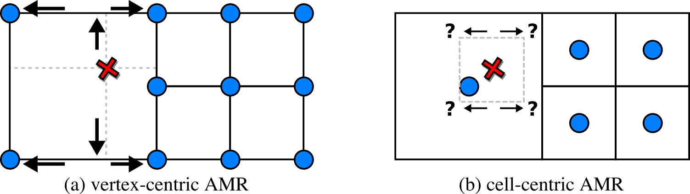
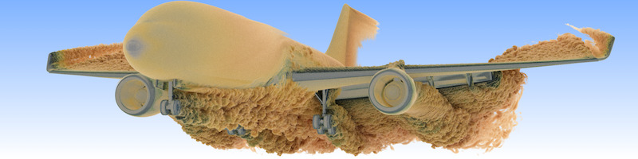
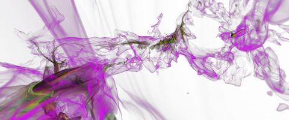

AMR codes virtually always store the data (density, temperature, velocities, etc.) at the "cell centers". For that, imagine the cell to be a small box. "Vertex-centric" methods associate the data with the box corners, while "cell-centric" means the data is stored at the center of the box. Efficient and high-quality visualizations usually have to reconstruct the data at arbitrary sample points and for that need to be able to quickly identify rectangular neighborhoods.

In (a), with vertex-centric data, this is simple, as when we move up/down, left/right,
from front to back, we eventually find the nearest data points for the sample position
to form a rectangular region. In (b), with cell-centric data, finding that neighborhood
is non-obvious even in the simplest of cases, and has led to visualization packages such
as OSPRay to incorporate complicated
auxiliary data structures to perform cell location. Other visualization packages
support this kind of data, but don't effectively handle the "level boundaries" where cells
of different sizes connect, and produce cracks and other artifacts when
isosurfaces
or
volume renderings
are generated from this kind of data.
In VTV-AMR, our focus is on crack-free visualizations with state-of-the-art GPU ray tracing technology to produce high-quality renderings, and hence we have to use the aforementioned auxiliary data structures; unfortunately, the memory footprint and construction times of such data structures are not targeted at real-time performance, nor at time-varying data comprised of multiple simulation time steps with adaptively changing AMR grids.
Our contributions will advance the state-of-the-art in high-quality AMR data reconstruction of cell-centric data on GPUs to interactively visualize data sets composed of 100s to 1000s of time steps. We focus on data where even single time steps saturate most of the available GPU memory. For that, we build on state-of-the-art software solutions that were recently published in leading international research journals, and that we will extend to support time-varying data.
Finally, here are some nice visualizations that we can already create with our software. For more of these, check out the Visualizations subpage.


The "NASA exajet" data set is courtesy Pat Moran.
The molecular cloud data set is reused with friendly permission by Daniel Seifried with the
Theoretical Astrophysics Group of the University of Cologne.

{kind=link}
{kind=link}
{kind=link}
{kind=link}
{kind=link}
{kind=link}
{kind=link}
{kind=link}
{kind=link}